File: 000810.gt.txt (if the image is defective, simply delete all Arabic text and the line will be excluded)

التماس فهم ما لم يفهموا ، وإنما قد كسبت في هذا التدبير ، إذ كنت إلى
File: 000811.gt.txt (if the image is defective, simply delete all Arabic text and the line will be excluded)
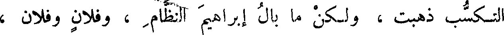
التكسب ذهبت ، ولكن ما بال إبراهيم النظام ، وفلان وفلان ،
File: 000812.gt.txt (if the image is defective, simply delete all Arabic text and the line will be excluded)

46 يكتبون الكتب لله بزعمهم ، ثم يأخذها مثلى فى مواقفته (2) ، وحسن
File: 000813.gt.txt (if the image is defective, simply delete all Arabic text and the line will be excluded)
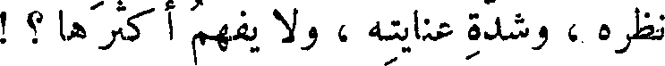
نظره ، وشدة عنايته ، ولا يفهم أكثرها ؟ !
File: 000814.gt.txt (if the image is defective, simply delete all Arabic text and the line will be excluded)
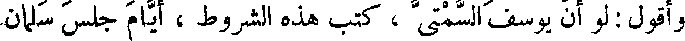
وأقول : لو أن يوسف السمتى ، كتب هذه الشروط ، أيام جلس سلمان
File: 000815.gt.txt (if the image is defective, simply delete all Arabic text and the line will be excluded)
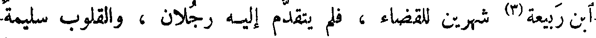
ابن ربيعة(3) شهرين للقضاء ، فلم يتقدم إليه رجلان ، والقلوب سليمة
File: 000816.gt.txt (if the image is defective, simply delete all Arabic text and the line will be excluded)
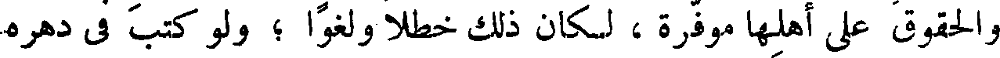
والحقوق على أهلها موفرة ، لكان ذلك خطلا ولغوا ؛ ولو كتب في دهره
File: 000817.gt.txt (if the image is defective, simply delete all Arabic text and the line will be excluded)
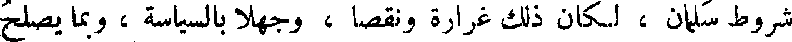
شروط سلمان ، لكان ذلك غرارة ونقصا ، وجهلا بالسياسة ، وبما يصلح
File: 000818.gt.txt (if the image is defective, simply delete all Arabic text and the line will be excluded)
( مواضع الإسهاب )
File: 000819.gt.txt (if the image is defective, simply delete all Arabic text and the line will be excluded)
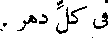
فى كل دهر .
File: 000820.gt.txt (if the image is defective, simply delete all Arabic text and the line will be excluded)
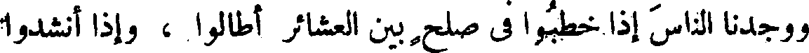
ووجدنا الناس إذا خطبوا فى صلح بين العشائر أطالوا ، وإذا أنشدوا
File: 000821.gt.txt (if the image is defective, simply delete all Arabic text and the line will be excluded)
( مشى الخصى )
File: 000822.gt.txt (if the image is defective, simply delete all Arabic text and the line will be excluded)
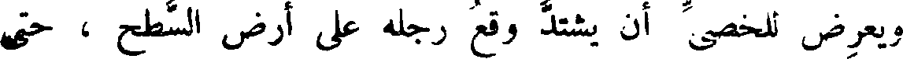
ويعرض للخصى أن يشتد وقع رجله على أرض السطح ، حتى
File: 000823.gt.txt (if the image is defective, simply delete all Arabic text and the line will be excluded)
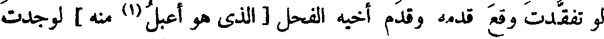
لو تفقدت وقع قدمه وقدم أخيه الفحل [ الذى هو أعبل(1) منه ] لوجدت
File: 000824.gt.txt (if the image is defective, simply delete all Arabic text and the line will be excluded)
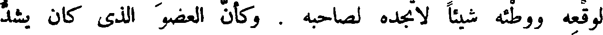
لوقعه ووطئه شيئا لا تجده لصاحبه . وكأن العضو الذى كان يشد
File: 000825.gt.txt (if the image is defective, simply delete all Arabic text and the line will be excluded)
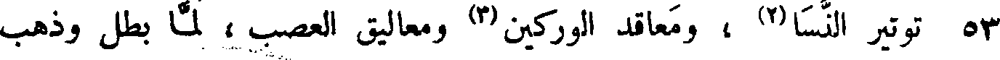
53 توتير النسا(2) ، ومعاقد الوركين (3) ومعاليق العصب ، لما بطل وذهب
File: 000826.gt.txt (if the image is defective, simply delete all Arabic text and the line will be excluded)
الذى كان يمسكه ويرفعه ، فيخف لذلك وقع رجله ، صار كالذى لا يتماسك
File: 000827.gt.txt (if the image is defective, simply delete all Arabic text and the line will be excluded)
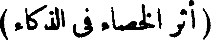
( أثر الخصاء فى الذكاء )
File: 000828.gt.txt (if the image is defective, simply delete all Arabic text and the line will be excluded)
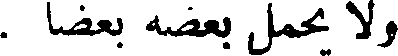
ولا يحمل بعضه بعضا .
File: 000829.gt.txt (if the image is defective, simply delete all Arabic text and the line will be excluded)
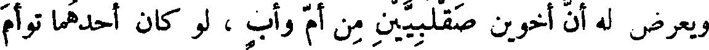
ويعرض له أن أخوين صقلبيين من أم وأب ، لو كان أحدهما توأم
File: 000830.gt.txt (if the image is defective, simply delete all Arabic text and the line will be excluded)
أخيه ، أنه متى خصى أحدهما خرج الخصى منهما أجود خدمة ، وأفطن
File: 000831.gt.txt (if the image is defective, simply delete all Arabic text and the line will be excluded)
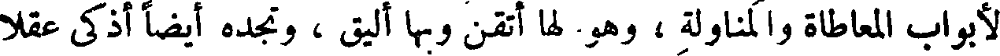
لأبواب المعاطاة والمناولة ، وهو لها أتقن وبها أليق ، وتجده أيضا أذكى عقلا
File: 000832.gt.txt (if the image is defective, simply delete all Arabic text and the line will be excluded)
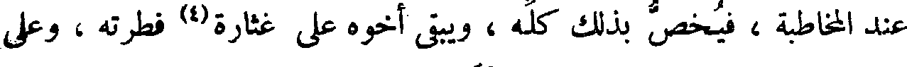
عند المخاطبة ، فيخص بذلك كله ، ويبقى أخوه على غثارة(4) فطرته ، وعلى
File: 000833.gt.txt (if the image is defective, simply delete all Arabic text and the line will be excluded)
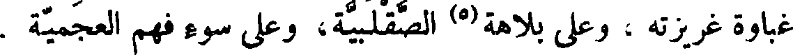
غباوة غريزته ، وعلى بلاهة(5) الصقلبية، وعلى سوء فهم العجمية .
File: 000834.gt.txt (if the image is defective, simply delete all Arabic text and the line will be excluded)
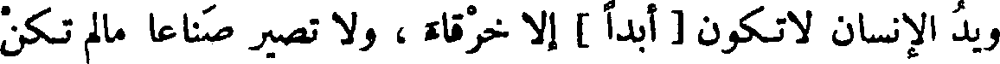
ويد الإنسان لا تكون [ أبدا ] إلا خرقاء ، ولا تصير صناعا مالم تكن
File: 000835.gt.txt (if the image is defective, simply delete all Arabic text and the line will be excluded)
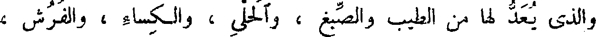
والذى يعد لها من الطيب والصبغ ، والحلى ، والكساء ، والفرش ،
File: 000836.gt.txt (if the image is defective, simply delete all Arabic text and the line will be excluded)
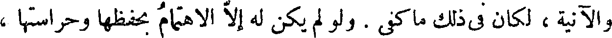
والآنية ، لكان فى ذلك ما كفى . ولو لم يكن له إلا الاهتمام بحفظها وحراستها ،
File: 000837.gt.txt (if the image is defective, simply delete all Arabic text and the line will be excluded)
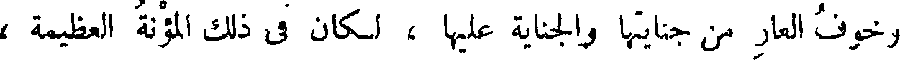
وخوف العار من جنايتها والجناية عليها ، لكان فى ذلك المؤنة العظيمة ،
File: 000838.gt.txt (if the image is defective, simply delete all Arabic text and the line will be excluded)
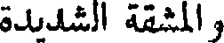
والمشقة الشديدة
File: 000839.gt.txt (if the image is defective, simply delete all Arabic text and the line will be excluded)
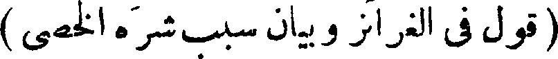
To Save: `Ctrl+s`, make sure to choose `Webpage, complete`!